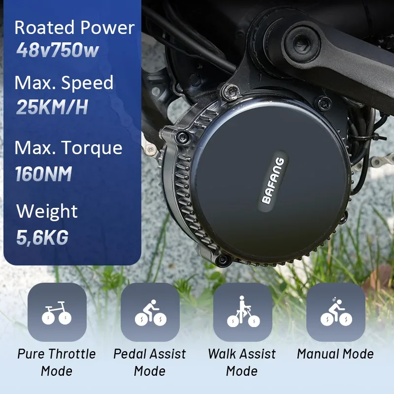
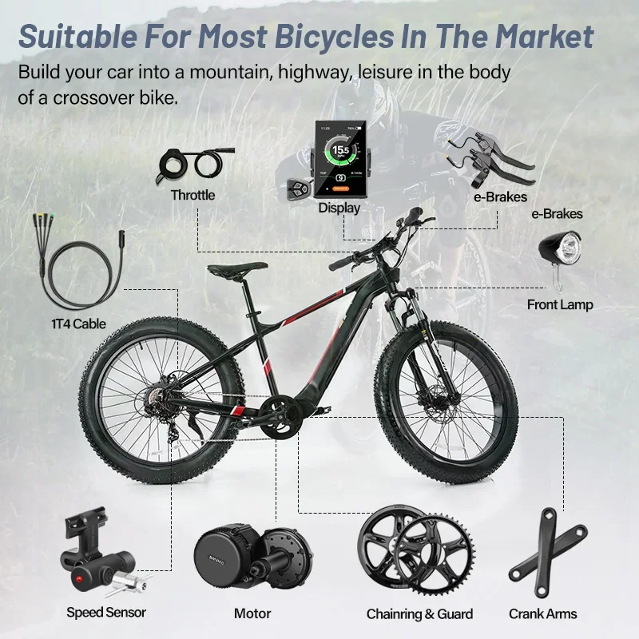
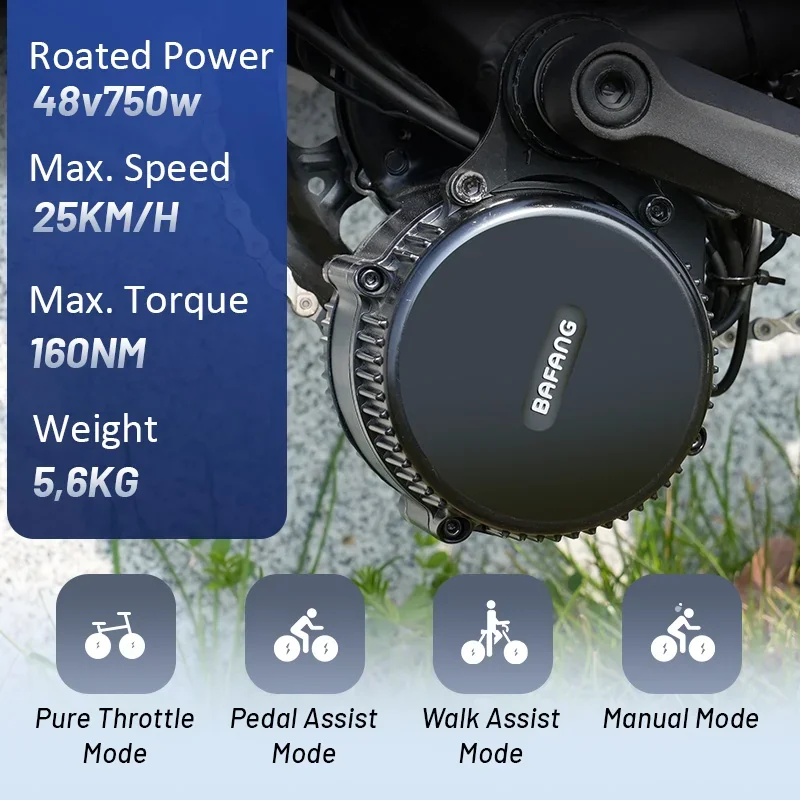
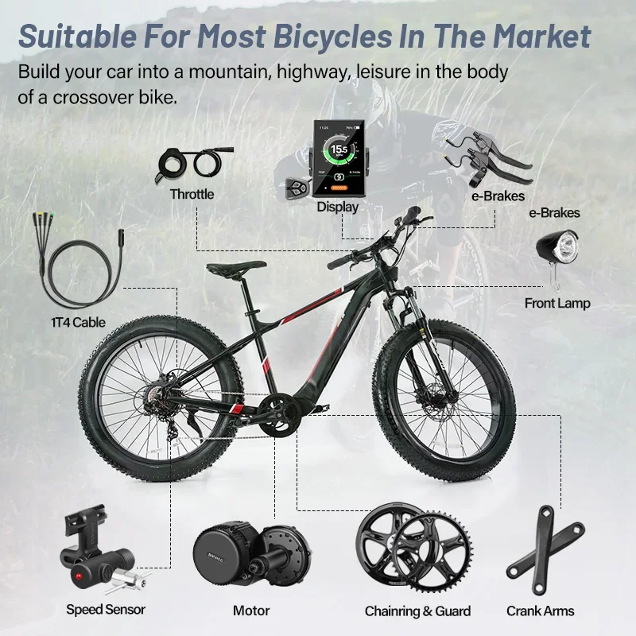

Kit de motor central BAFANG BBS01B/BBS02B 36V, 250W/350W/500W para conversão de bicicleta elétrica. Avise-me se precisar de ajuda com outros títulos de produtos!
- Motor Central Potente: Experimente desempenho superior e assistência suave ao pedal com o motor Bafang posicionado no centro da sua bicicleta.
- Múltiplas Opções de Potência: Escolha entre 250W, 350W ou 500W para personalizar sua experiência de ciclismo elétrico de acordo com suas necessidades e estilo de pilotagem.
- Eficiente e Durável: Os motores Bafang BBS01B e BBS02B são reconhecidos por sua confiabilidade e eficiência excepcional, garantindo desempenho duradouro.
Abrace a liberdade e a conveniência do ciclismo elétrico com o Kit Motor Bafang. Eleve as capacidades da sua bicicleta e desfrute de um passeio mais agradável e sustentável.
O kit de motor Bafang Engine de 250 W, 350 W ou 500 W é uma solução potente e versátil para converter sua bicicleta em uma bicicleta elétrica. Este kit de motor central oferece torque e eficiência excepcionais, proporcionando uma experiência de pilotagem suave e agradável.
- Disponível em três opções de potência: 250W, 350W ou 500W para atender às suas necessidades
- Posicionamento do motor central para distribuição de peso e manuseio ideais
- Sistema de transmissão por corrente para transferência de potência eficiente
- Display integrado com indicador de nível de bateria e outros dados de pilotagem
- Múltiplos níveis de assistência para personalizar sua experiência de pilotagem
O Kit de Motor Bafang Engine foi projetado com componentes robustos e engenharia precisa.
- Potência do Motor: 250W, 350W ou 500W
- Voltagem: 36V
- Tipo de Motor Central: BBS01B ou BBS02B
- Corrente Compatibilidade: Compatível com tamanhos comuns de correntes de bicicleta
- Peso: Relativamente leve para sua potência
O Kit Motor Bafang Engine oferece inúmeras vantagens para ciclistas que buscam uma experiência de pedalada aprimorada.
- Maior autonomia e eficiência: A assistência elétrica reduz o esforço do ciclista, aumentando a distância percorrida e economizando energia.
- Desempenho aprimorado: O motor potente fornece um impulso quando você mais precisa, facilitando a subida de ladeiras e permitindo atingir velocidades mais altas.
- Redução da fadiga: Pedalar sem esforço torna os passeios longos mais confortáveis e agradáveis.
- Uso versátil: Adequado para deslocamentos diários, passeios recreativos e aventuras off-road.
Converter sua bicicleta em uma bicicleta elétrica com o Kit Motor Bafang Engine é um processo relativamente simples. Normalmente, envolve a instalação do motor, da bateria, do visor e do chicote de fios no quadro da sua bicicleta.
Observação:Recomenda-se consultar as diretrizes de instalação profissional ou procurar a ajuda de um mecânico qualificado para obter os melhores resultados.